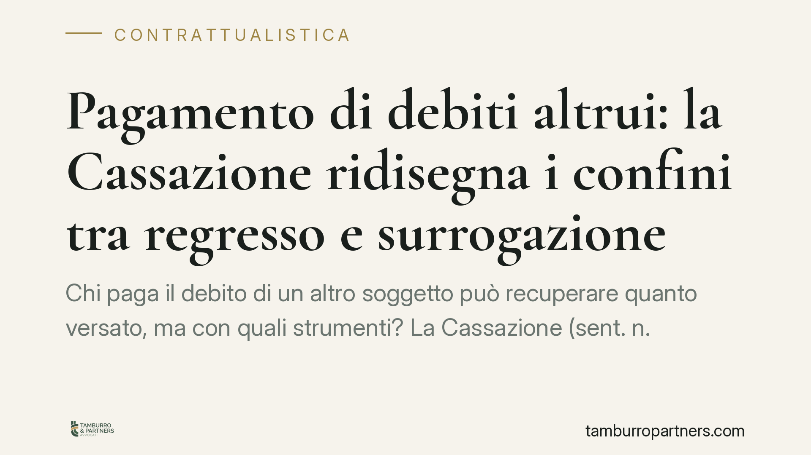

Pagamento di debiti altrui: la Cassazione ridisegna i confini tra regresso e surrogazione
Chi paga il debito di un altro soggetto può recuperare quanto versato, ma con quali strumenti? La Cassazione (sent. n. 16835/2026) separa due scenari: obbligazioni a interesse comune, con solo azione di regresso, e rapporti asimmetrici, con doppio binario. La distinzione incide su prescrizione, garanzie recuperabili e strategia di recupero. Un tema concreto per fideiussori, imprese e assicurazioni.

Il fatto
La terza sezione civile della Cassazione, con la sentenza n. 16835 depositata il 29 maggio 2026, torna su una questione frequente nella pratica: cosa può chiedere chi estingue un'obbligazione che grava, almeno in parte, su altri.
Il nodo non è nuovo, ma le conseguenze pratiche sono rilevanti. La scelta tra i due rimedi disponibili cambia i termini di prescrizione e, soprattutto, incide sulla possibilità di avvalersi delle garanzie che assistevano il credito originario.
Inquadramento normativo
I due istituti in gioco sono l'azione di regresso (art. 1299 del Codice civile) e la surrogazione legale (art. 1203 n. 3 del Codice civile).
L'azione di regresso è il diritto di chi ha pagato l'intero debito di recuperare dagli altri coobbligati la loro quota. È un credito nuovo e autonomo, che nasce al momento del pagamento: da quel giorno decorre la prescrizione ordinaria decennale.
La surrogazione legale, invece, fa subentrare chi paga nella stessa posizione del creditore originario. Il credito resta quello di partenza, con tutte le sue caratteristiche: garanzie reali e personali (ipoteche, pegni, fideiussioni), ma anche eventuali vizi, eccezioni opponibili e il termine di prescrizione già maturato. Il subentrante eredita il credito così com'è, nel bene e nel male.
Cosa dice la Cassazione
La sentenza distingue due categorie di rapporti.
Obbligazioni a interesse comune. Quando più soggetti sono obbligati per un interesse che li accomuna – tipicamente i condebitori solidali che condividono il medesimo affare – chi paga l'intero dispone della sola azione di regresso. Non c'è surrogazione, perché non vi è un creditore "esterno" nella cui posizione subentrare: il rapporto è interno al gruppo di obbligati. La prescrizione è quella decennale, con decorrenza dal pagamento.
Obbligazioni asimmetriche. Quando chi paga è estraneo all'interesse sottostante – si pensi al fideiussore o al garante che adempie per il debitore principale – opera il "doppio binario". Il solvens può scegliere tra regresso e surrogazione, valutando quale rimedio sia più conveniente nel caso concreto.
La differenza è sostanziale. Il regresso offre un termine decennale che riparte dal pagamento, ma non trascina con sé le garanzie del credito originario. La surrogazione conserva le garanzie, ma eredita la prescrizione già in corso e le eccezioni opponibili al creditore iniziale.
Implicazioni pratiche
Per il fideiussore e il garante la pronuncia conferma la libertà di scelta, ma impone un'analisi preventiva: se il credito originario era assistito da ipoteca, la surrogazione può essere preferibile; se invece quel credito è prossimo alla prescrizione, il regresso garantisce un termine più ampio.
Per le imprese coinvolte in obbligazioni solidali legate a un interesse comune, la sentenza chiude le porte alla surrogazione: resta solo il regresso. Chi conta di recuperare attraverso le garanzie del creditore originario deve verificare che il proprio caso non rientri in questa categoria.
Per le assicurazioni che indennizzano e poi agiscono verso il responsabile, la distinzione tra i due binari orienta la costruzione dell'azione di rivalsa e la gestione dei termini.
In tutti i casi, la qualificazione del rapporto – a interesse comune o asimmetrico – diventa il passaggio decisivo, da affrontare prima di avviare l'azione.
Cosa fare in concreto
- Qualifica il rapporto prima di agire: verifica se l'obbligazione è a interesse comune o asimmetrica, perché da questo dipende il rimedio disponibile.
- Mappa le garanzie che assistevano il credito originario: la loro esistenza rende spesso preferibile la surrogazione.
- Controlla i termini di prescrizione sia del credito originario sia del regresso, confrontando le due decorrenze.
- Conserva la prova del pagamento e della sua data: è il fatto costitutivo dell'azione di regresso e il momento da cui decorre il termine.
- Valuta le eccezioni opponibili nell'ipotesi di surrogazione: subentrare nel credito significa ereditarne anche i punti deboli.
Un chiarimento utile
La pronuncia non introduce regole nuove, ma ordina un quadro spesso applicato in modo confuso. La convenienza tra regresso e surrogazione non è astratta: dipende dalle garanzie, dai termini e dalle eccezioni in gioco nel singolo rapporto. Consigliamo di affrontare questa valutazione in via preventiva, prima di scegliere la strada del recupero.
---
*Contributo informativo a cura di Tamburro & Partners - Avv. Giuseppe Tamburro. Non costituisce parere legale.*
Ogni contratto ha il suo equilibrio.
Se vuoi una revisione delle clausole o una redazione su misura, scrivi allo studio. Ti rispondiamo entro un giorno lavorativo.